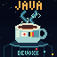
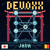

3つの風景でつながるDevoxx。10.24秒のループを、64×64の光で。
文字のない、日本からアントワープへの旅。富士山と鳥居、日の丸を背に、白い飛行機が海を越えて中央駅へ向かう。

日ベルのカップから、湯気とコードが生まれる。回路を光が走る。

鳥居の向こうに回転する9球の立体。軌道と通信が未来を描く。
全て64×64 / 128 frames / 10.24 s / 5MB未満。GIF出力: Jixoo。LED表示は見え方の目安です。